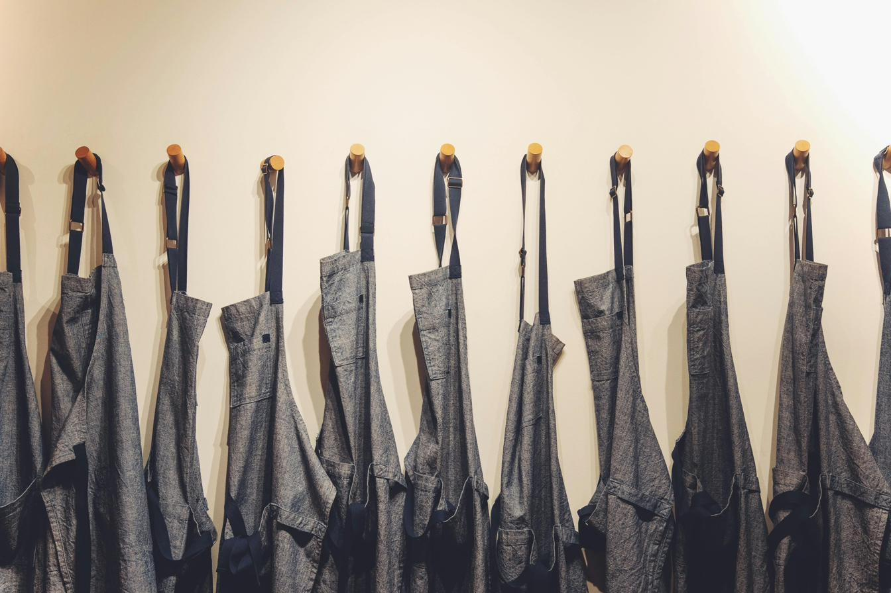

Linnedudlejning, erhvervsvaskeri og tekstilstyring til virksomheder på Sjælland — altid tilgængelige, ordentligt vedligeholdt og leveret, når I har brug for dem.
Book et møde
Håndklæder, sengelinned, dug og servietter, køkkentekstiler, arbejdstøj og spatekstiler — leveret i de mængder, jeres drift har brug for.
Vores ydelser →Afhentet, professionelt vasket, kvalitetskontrolleret og leveret tilbage efter en plan, der passer jeres forretning.
Vores ydelser →Løbende styring, reparation og udskiftning, så de rigtige produkter altid er tilgængelige — uden at I skal holde styr på det.
Vores ydelser →»Vi er ikke interesserede i at gemme os bag processer. God service starter med at være tilgængelig og finde løsninger sammen.«— Sådan arbejder vi hos Linen Works